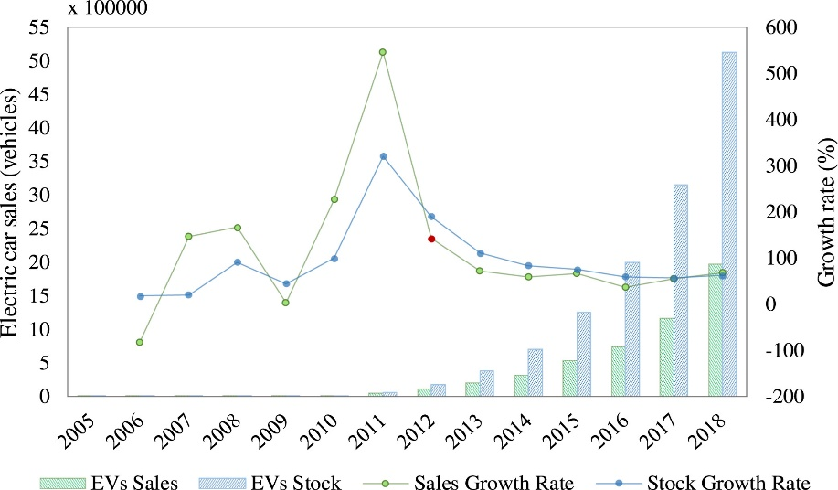

| Abstract |
| Introduction |
| Analysis and discussion |
| References |
Active Learning (Angluin, 1988, Cohn et al., 1994) is a paradigm where a concept is learnt by an intelligent machine through the interaction of an oracle with the machine system, over a sequence of learning epochs. A distinctive component in an active system is the querying strategy, used to sample candidate training instances from a pool and evaluate them for informativeness, i.e., their potential to improve the classification model. Various strategies have been proposed including; Query by Committee (Seung et al., 1992), Monte Carlo estimation (Roy and McCallum, 2001), uncertainty sampling (Lewis and Gale, 1994) and version space reduction (margin sampling) (Tong and Koller, 2001). Irrespective of how the most informative pattern instances are chosen at each epoch they are presented for labeling, to a machine (database) or human oracle that has knowledge of the class labels. After adding the newly labeled instances to the current training set, a revised model is subsequently induced. A goal of this process is to achieve an efficient, incremental advancement of learning at each epoch. The process is continued until some stopping criterion has been met, such as reaching a stage where information from the selected instances is contrary to the model, causing the classifier confidence to drop, as in Vlachos (2008).
Electric vehicles (EV) have been around since the first half of the 19th century but have never really
been the preferred choice of power over combustion engines which have dominated the automotive market
for the majority of its existence. In recent years EVs have increased in popularity due to the rising
worries of climate change and the impact combustion engines are having on it. As a result of this, EV
production and sales have been rapidly increasing since 2011 (fig 1)

| £ Cost of repairs | Lifespan of repairs (years) |
|---|---|
| 0.7 m | 2 |
| 3.3 m | 4 |
| 2.6 m | 5 |
| 17.4 m | 7 |
| 8.8 m | 9 |
Angulin, D (1988), Queries and concept learning. Machine learning 2, (4), 319-342.
Brinker, K (2003), Incorporating Diversity in Active Learning with Support Vector Machines,
Proceedings of the Twentieth International Conference on Machine Learning (ICML-2003).
Bruzzone, L, Chi, M and Marconcini, M (2006), A novel transductive SVM for semisupervised classication
of remote-sensing images, IEEE Transactions on Geoscience and Remote Sensing, 44, (11), 3363.
Bruzzonem L and Persello, C (2009), Active learning for classification of remote sensing images.